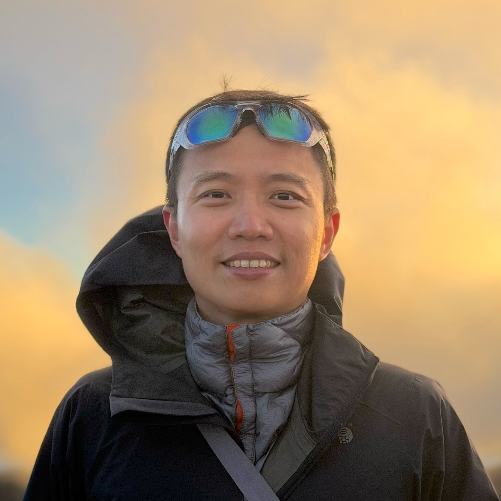

Hi there! I design algorithms that make use of randomness. I do this research at Inferweave Research, which I founded in 2024. I received a Ph.D. in Computer Science at CU Boulder under Dan Larremore and Josh Grochow, and was then a postdoc with Stephen Becker in Applied Mathematics. I am also a Senior Software Engineer at Global Healthcare Exchange, where I build the company’s ontology and the AI tools that let others use it.
My research themes: